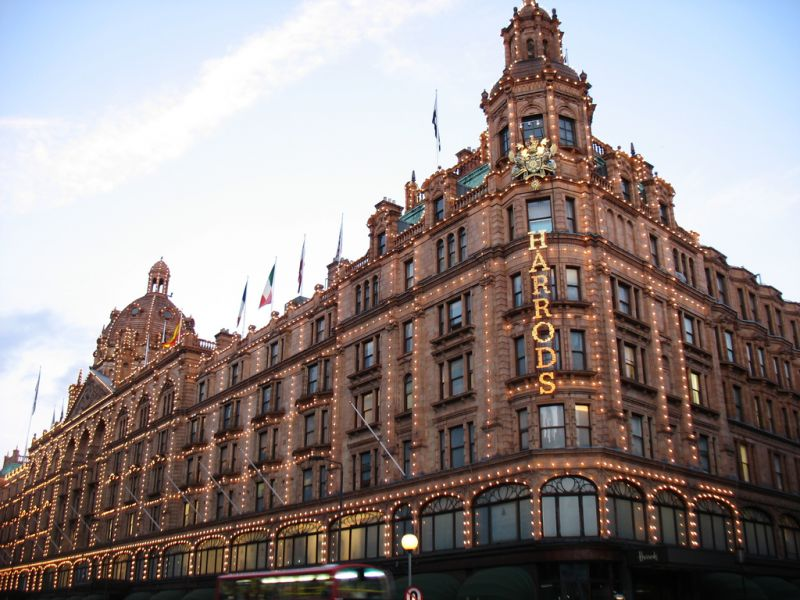
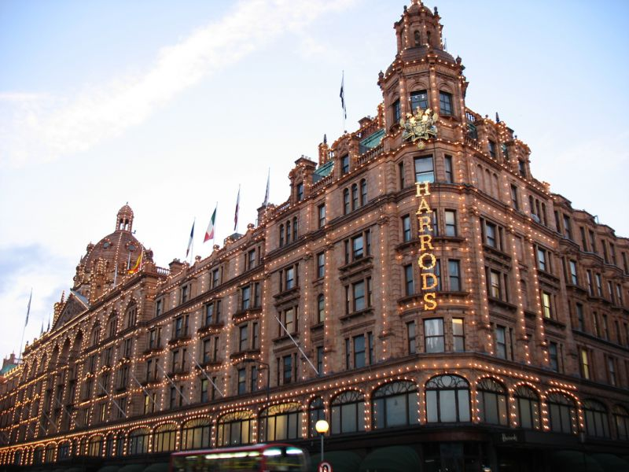
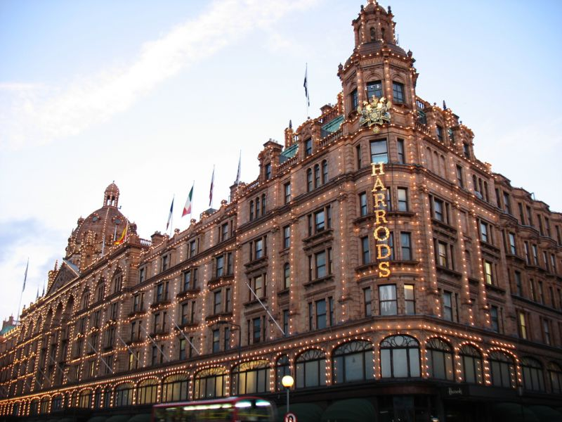

Londra este capitala Angliei și a Regatului Unit. Este cel mai important centru politic, financiar, cultural și artistic al Regatului Unit, și unul dintre cele mai importante orașe ale lumii.Populația Londrei este de 7.421.229 locuitori în Londra Mare, cărora li se adaugă alte câteva milioane din zona metropolitană. Există o imensă diversitate de etnii, culturi și religii, Londra fiind unul din cele mai cosmopolite orașe din Europa și din lume. Aici locuiesc, permanent sau temporar, mulți dintre cei mai bogați oameni ai lumii. În Londra se găsesc sediile a numeroase instituții și corporații de importanță globală; multe clădiri importante: palate, muzee, teatre,săli de concerte, aeroporturi, stații de cale ferată, numeroase ambasade și consulate.Westminster și Biserica Sf. Margareta din Londra au fost înscrise în anul 1987 pe lista patrimoniului mondial UNESCO.Simbolul Londrei este Big Ben-ul, turnul cu ceas al Palatului Parlamentului, construit în secolul al XIX-lea în stil neogotic.

City of London este centrul istoric al orașului, și în același timp cel mai important cartier financiar al Regatului Unit. Este administrat de către Corporația Londrei, condusă de Lordul Primar al Londrei. City-ul deține propriul corp de poliție, separat de Poliția Metropolitană. Populația permanentă a City-ului este de doar 7000 de locuitori, însă aici lucrează peste 300.000 de persoane. Calitatea de centru financiar a City-ului a început să se dilueze în ultimii ani, o dată cu inaugurarea în Docklands, în estul orașului, a complexului Canary Wharf. Londra este un motor urias al economiei lumii. Londra a produs 365 miliarde $ în 2004 (17% din PIB-ul Regatului Unit), iar intreaga zona metropolitana londoneza a produs circa 30% din PIB-ul Regatului, adica mai mult decit PIB-ul Braziliei sau Rusiei.
Alege un numar intre 20 si 200
| Nr.crt. | Obiectiv |
|---|---|
| 1 | Big Ben |
| 2 | Palatul Buckingham |
| 3 | Roata din Londra |
| 4 | Tower Bridge |
| 5 | Turnul Londrei |
| 6 | Palatul Westminster |
| 7 | London Dungeon |
Londra este un centru internațional al artelor, muzicii, muzeelor, și multor altora.
Londra găzduiește cinci orchestre simfonice: London Symphony Orchestra, London Philharmonic Orchestra, Royal Philharmonic Orchestra, Philharmonia și BBC Symphony Orchestra. Principalele săli de concerte simfonice sînt Royal Albert Hall, Barbican Centre, Royal Festival Hall și Queen Elizabeth Hall. Royal Opera House din Covent Garden este casa Operei Regale și a Baletului Regal.
În Londra și-au început activitatea trupe rock celebre precum The Clash, Led Zeppelin, The Libertines, sau Pink Floyd. Săli de concerte rock celebre sunt Brixton Academy, Astoria sau Hammersmith Apollo.
Londra găzduiește carnavaluri și parade celebre, cum ar fi Carnavalul din Notting Hill, sau paradele de Sfântul Patrick (17 martie) sau Sfântul Gheorghe (23 aprilie).
În Londra se găsesc peste 30 de teatre, majoritatea concentrate în West End. Cele mai multe sunt comerciale și pun în scenă musical-uri și alte piese populare. Teatre "ne-comerciale" sunt National Theatre, The Globe (reconstrucție fidelă a vechiului teatru al lui Shakespeare), Old Vic și Young Vic.
Londra a fost dintotdeauna centrul vieții religioase a Regatului Unit, în ciuda faptului că primatul Bisericii naționale, Biserica Anglicană, își are sediul la Canterbury. Cei doi episcopi anglicani ai Londrei sunt Episcopul Londrei, a cărui scaun este impozanta Catedrală Sf. Paul, și Episcopul de Southwark, sub a cărui ascultare se află credincioșii de la sud de Tamisa. Evenimentele religioase importante au loc fie în Catedrala Sf. Paul, fie în Catedrala Westminster. Arhiepiscopul de Westminster este conducătorul catolicilor britanici. De asemenea, Londra este cel mai mare centru al Islamului în Regatul Unit; Moscheea Centrală din Londra este un obiectiv celebru la marginea parcului Regents Park. Templul hindus din Neasden este cel mai mare templu hindus din afara Indiei și un exemplu remarcabil de clădire modernă construită în stil tradițional. Peste două treimi din evreii din Marea Britanie locuiesc în Londra.

Afiseaza produsul a doua numere:
Transforma 77 Fahrenheit in Celsius:
Replace "Microsoft" with "W3Schools" in the paragraph below:
Please visit Microsoft and Microsoft!
Hello World!!
Every time you click the button, getRndInteger(min, max) returns a random number between 0 (included) and 10 (excluded):
Input your age and click the button: